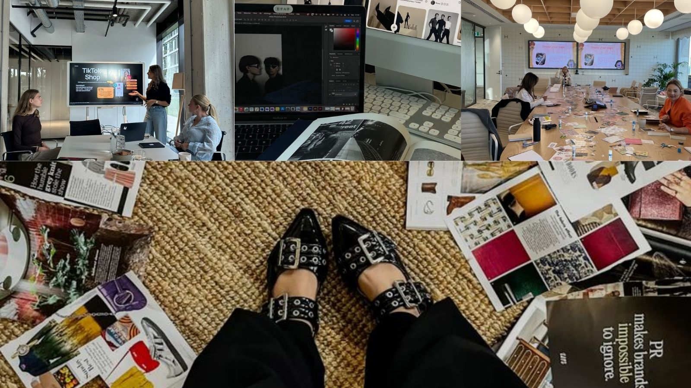

You choose a path in communications and public relations. Your days are filled with emails, meetings, and carefully crafting public images.
You begin working with artists—helping them grow, protecting their reputation, and managing how the world sees them.
You’re successful… respected… but always behind the curtain.

Sometimes you wonder what it would’ve been like to be the one in front of the camera.
Continue ← Go Back